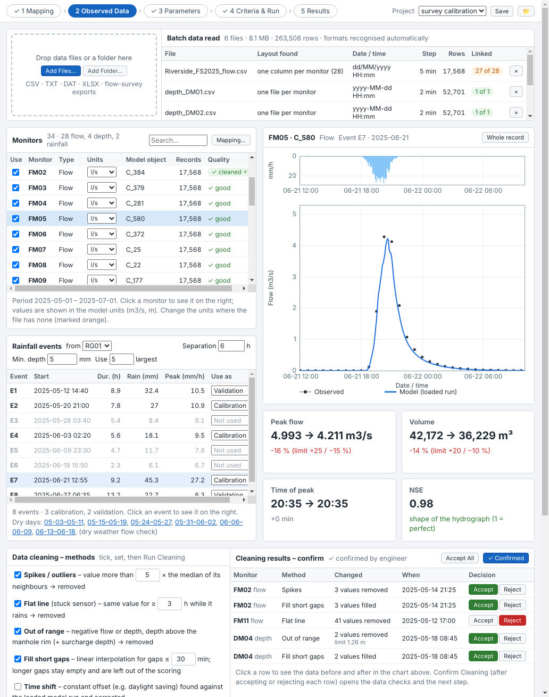
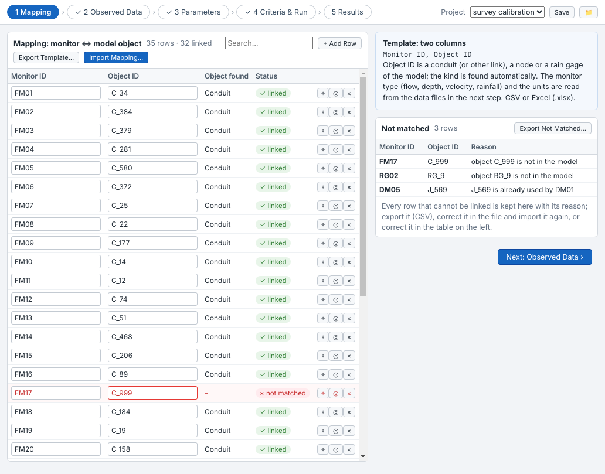
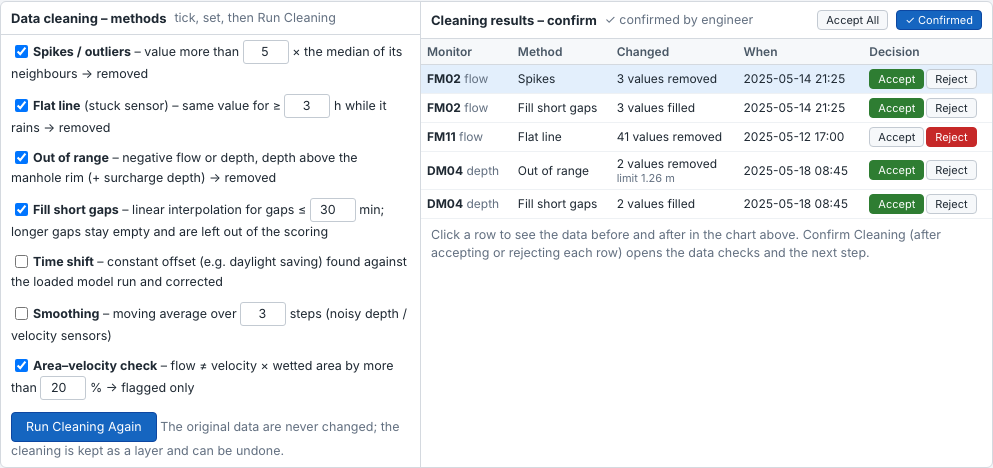
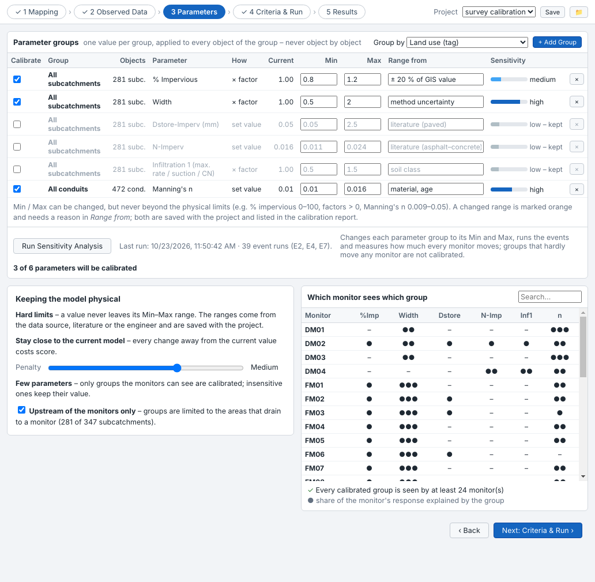
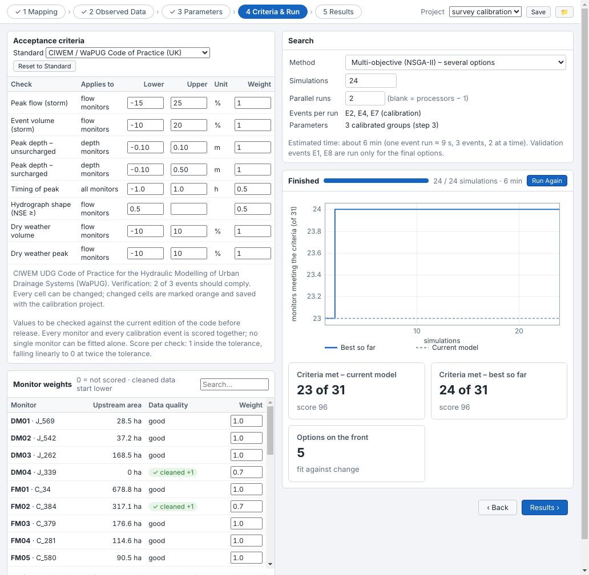
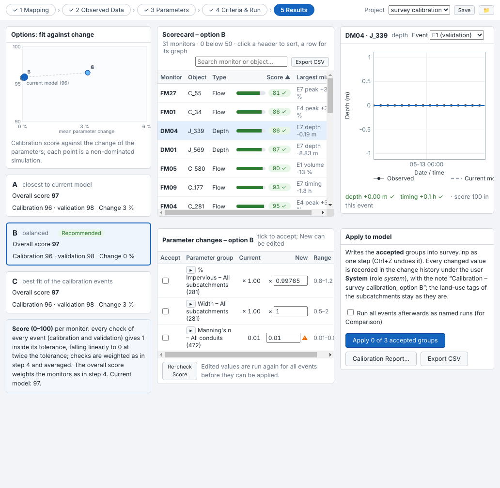

Simulation ▸ Calibration ▸ Auto Calibration calibrates the model against flow-survey data in five steps. Every monitor and every calibration event is scored together, the parameters are changed in groups within physical ranges, and the result is checked on validation events that were not used for fitting.
Auto Calibration is part of Avaris2 CS High Performance Simulation (HPS). In other editions the button shows a lock.

Auto Calibration opens as a large window over the whole application, so that the side panels do not take room from it. Close it with × or Esc; you are asked to save the calibration project. A calibration that is running keeps running when the window is closed, and the window comes back with its progress when you open it again.
Buttons that zoom to a monitor or pick an object from the map hide the window and show a bar at the bottom of the map; click the bar to return. When picking, the first object you click on the map is taken.
| Step | What you do |
|---|---|
| 1 Mapping | Link each monitor (flow meter, depth sensor, rain gauge) to a conduit, node or rain gage of the model. |
| 2 Observed Data | Read the survey files, choose the rainfall events, clean the data and confirm the cleaning. The data checks follow. |
| 3 Parameters | Choose the parameter groups and their ranges, then run the sensitivity analysis. |
| 4 Criteria & Run | Choose the acceptance standard and the monitor weights, then start the automatic calibration. |
| 5 Results | Compare the options, check the scorecard and the graphs, accept parameter changes and apply them to the model. |
A calibration project is saved in the folder <model>_Calibration next to the model file:
<name>.avcal holds the settings: mapping, files, monitors, events, cleaning decisions, parameters, criteria, search results.<name>.avobs holds the observed data read from the survey files.<name>.avres holds the simulated series of the options for the result graphs.The survey files themselves are never changed. Use the Project list at the top right to open another project or to create a new one (the mapping can be copied); Save saves the project and the folder button opens the project folder.
Load a run that covers the survey period (Database) before step 2: the chart then shows the model next to the observed data, and the time-shift check of the cleaning can compare against it.
The mapping links every monitor ID of the survey to an object of the model. The kind of object (conduit, junction, rain gage …) is found automatically.

Monitor ID, Object ID. If observed data were already read, their monitor IDs are filled in.Every row that cannot be linked is listed on the right with its reason, for example object C_999 is not in the model, J_569 is already used by DM01 or no object ID. When an object with the same name in other letter case exists it is named. Export Not Matched… writes the list as CSV so that it can be corrected and imported again.
Step 2 reads the survey data, finds the rainfall events, cleans the data and checks it. The page is laid out in the order of the work: data files, monitors and events with the chart, data cleaning, and the data checks last.
Drop files or a whole folder on the dashed area, or use Add Files… / Add Folder…. CSV, TXT, DAT and Excel (.xlsx, every sheet) files of any size are read; large files are read in the background. The Batch data read table shows what was recognised in each file:
| Recognised | How |
|---|---|
| Layout | One column per monitor; one file per monitor (the monitor ID comes from the column header, the file name or a line above the header); a long table (monitor, time, value); the rain-gauge format STA YYYY MM DD HH mm value. |
| Date and time | ISO dates, dd/MM/yyyy and MM/dd/yyyy (told apart by the values; if they cannot be told apart a list lets you choose), separate date and time columns, AM/PM, Excel dates. |
| Monitor, variable, units | Monitor IDs of the mapping are preferred. The variable (flow, depth, velocity, rainfall) and the units come from the header, e.g. FM01 Flow (l/s) or a units row below the header. |
Monitor IDs that are not yet in the mapping are added to it with an empty object ID.
The Monitors table lists every monitor with its type, units, model object, number of records and data quality. Values are converted to the model units (for example l/s to m³/s). Where a file has no units, the units list is marked orange and model units are assumed: choose the right units there. Untick Use to leave a monitor out.
Events are found in the rainfall of the chosen rain gauge. Separation is the dry time that separates two events, Min. depth the smallest event kept. Use … largest sets how many of the largest events are used; they alternate between calibration and validation. Change Use as on any row: Calibration, Validation or Not used. Dry days (three days without rain) are listed for the dry weather flow check; click one to show it in the chart.
Click a monitor and an event: the chart shows the rainfall at the top, the observed data and the model of the loaded run. The four cards below compare peak, volume, time of peak and the shape of the hydrograph (NSE) with the WaPUG limits. Whole record shows the full survey period. Drag in the chart to zoom, double-click to zoom out.
Tick the methods, set their values and click Run Cleaning. The original data are never changed: the cleaning is kept as a layer.
| Method | What it does |
|---|---|
| Spikes / outliers | Removes values more than k times the median of their neighbours (not applied to rainfall). |
| Flat line | Removes values of a stuck sensor: the same value for at least h hours while it rains. Low dry-weather values and a level held at the top of the record (pipe full) are kept. |
| Out of range | Removes negative flows and depths, and depths above the manhole rim plus surcharge depth. |
| Fill short gaps | Interpolates gaps up to the set length; longer gaps stay empty and are left out of the scoring. |
| Time shift | Finds a constant offset (for example daylight saving) against the loaded run and corrects it. |
| Smoothing | Moving average for noisy depth and velocity sensors. |
| Area–velocity check | Flags (does not change) flows that differ from velocity × wetted area by more than the set percentage. |

After the cleaning is confirmed the data checks are shown: monitors without a model object, units, data steps, calibration and validation events, data missing in events, rain volume against flow volume (runoff coefficient), values still missing, cleaning that was rejected on purpose, and dry days. Next: Parameters becomes available only after the cleaning is confirmed.
Parameters are calibrated in groups: one value per group, applied to every object of the group, never object by object. This keeps the model physical and the number of unknowns small.

A first set of groups is proposed: % impervious (by land-use tag when the subcatchments have tags), width, depression storage, Manning's n of impervious areas, infiltration, and Manning's n of the conduits (not ticked). To add groups, choose Group by and click + Add Group:
| Group by | Groups |
|---|---|
| Land use (tag) | One group per tag of the subcatchments (or conduits). |
| Soil type / infiltration class | Subcatchments with the same infiltration parameters. |
| Sewershed / monitor catchment | The area that drains to each monitor (to the nearest monitor downstream). |
| Partition | The sub-models of the model partition (HPS). |
| Polygon layer | The polygons of a layer, named by an attribute; objects are assigned by their centre. |
| Selected objects | The subcatchments or conduits selected on the map. |
| All objects | All subcatchments or all conduits. |
Parameters are % impervious, width and % slope (× factor), depression storage, Manning's n of impervious and pervious areas, % zero-impervious (set value), the first two infiltration parameters (× factor) and Manning's n of conduits (set value).
Min and Max can be changed but never beyond the physical limits (for example % impervious 0–100, factors > 0, Manning's n 0.009–0.05). A changed range is marked orange; write the reason in Range from. Both are saved with the project and listed in the calibration report.
Run Sensitivity Analysis runs every calibration event with each group at its Min and at its Max and measures how much every monitor moves, in units of the acceptance tolerance. Groups with a low effect are unticked and keep their value (low – kept). The table Which monitor sees which group shows the share of each monitor's response explained by each group (●●● large, ●● medium, ● small) and warns about monitors that see no calibrated group.

Choose the standard: CIWEM / WaPUG Code of Practice (UK), US – MSDGC Modeling Guidelines 2013 or US EPA 1999 CSO Guidance (no numeric limits are given there: enter the values agreed for the project). Every cell of the table can be changed; changed cells are marked orange and saved with the project. Reset to Standard restores the values. Depth limits in metres are converted to feet for US models.
Each check gives 1 inside its tolerance, falling linearly to 0 at twice the tolerance. A monitor's score (0–100) is the weighted average of its checks over the events; the overall score weights the monitors. A monitor meets the criteria when all its checks pass in at least two of three events.
Every monitor starts with weight 1.0, minus 0.1 for each cleaning method applied to it and 0.2 when gaps were filled (at least 0.5). Change any weight; 0 means the monitor is not scored.
| Setting | Meaning |
|---|---|
| Method | Multi-objective (NSGA-II) finds options from "small change" to "best fit"; SCE-UA and DDS optimise one score (fit minus the penalty for change); DDS is the fastest. |
| Simulations | The number of parameter sets tried. Each runs all calibration events. |
| Parallel runs | How many event runs work at the same time; blank uses the number of processors minus one. |
Each event run starts 12 hours before the rain (warm-up), uses the observed rainfall of the mapped rain gauges and ends 12 hours after the rain. Only the monitored objects are written to the results, and the runs are deleted after scoring. The model file is not changed.

The chart plots the calibration score against the mean parameter change for the non-dominated simulations. Three options are offered: A closest to the current model, B balanced (recommended), C best fit of the calibration events. C is marked Over-fit risk when it scores lower than B on the validation events.
The scorecard lists every monitor with its score and largest miss. Search, sort by clicking a header, or export the scores of all options with Export CSV. Click a row to see its graph: observed data, current model and the option, for any calibration or validation event, with the checks of that event below.
When a monitor scores below 50 a box explains why. If the same check misses in the same direction in every event and every option, no parameter within its range can fix it: the box points to the model or the data (a weir crest, a missing connection, the sensor level, the meter calibration) and offers Zoom to the object and Exclude … and re-run.
Calibration Report… writes an HTML report of the data, cleaning, events, parameters, criteria and results into the project folder; Export CSV writes the old and new value of every object.